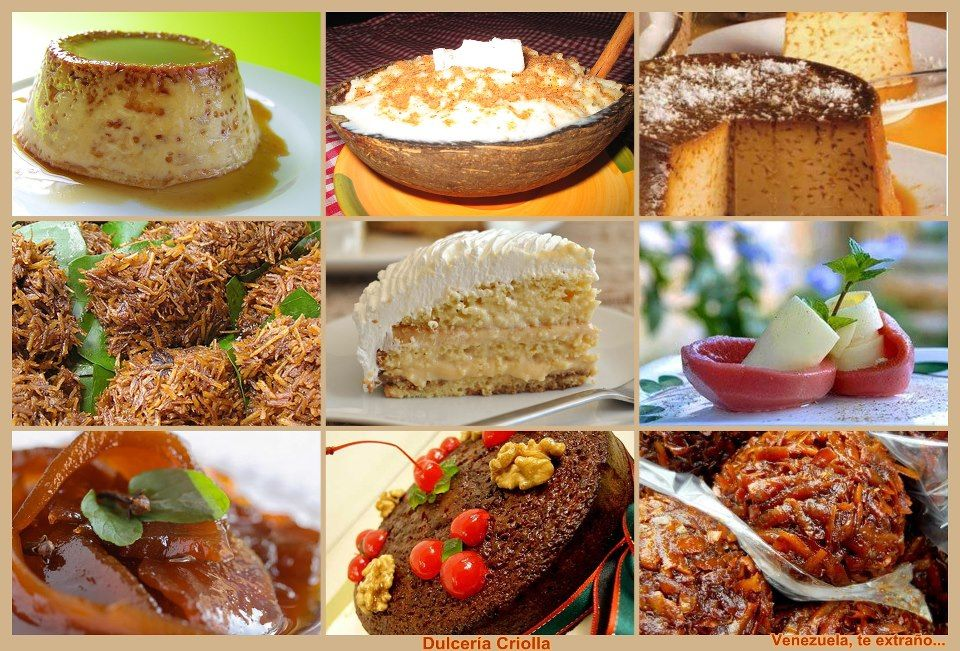

Historia de la dulcería criolla venezolana
La dulcería criolla venezolana tiene sus raíces en la mezcla de culturas indígenas, europeas y africanas que han dado forma a la identidad venezolana. Los indígenas legaron ingredientes como la yuca, el maíz y el cacao, mientras que los europeos aportaron técnicas de elaboración y nuevos ingredientes como la leche, la mantequilla y el azúcar. Los africanos, por su parte, introdujeron frutas tropicales como el mango y el coco.
A lo largo de los siglos, esta mezcla de influencias ha dado lugar a una amplia variedad de dulces únicos y deliciosos. Desde los humildes arequipe y quesillo hasta las elaboradas tortas negras y majarete, la dulcería criolla venezolana refleja la creatividad y el ingenio del pueblo venezolano.
Ingredientes básicos de la dulcería criolla venezolana
-
Cereales:
-
Maíz: Es uno de los ingredientes más importantes en la dulcería criolla venezolana. Se utiliza para preparar una gran variedad de dulces, como las arepitas dulces, las hallaquitas, el majarete, el gofio y el dulce de jojoto.
-
Arroz: También se utiliza con frecuencia en la preparación de dulces, como el arroz con leche, el quesillo y el dulce de leche cortada.
-
Harina de trigo: Se utiliza para hacer tortas, galletas, polvorosas y otros dulces horneados.
-
-
Frutas tropicales: Las frutas tropicales son abundantes en Venezuela y se utilizan en la elaboración de una gran variedad de dulces, como el dulce de lechosa, el dulce de guayaba, el dulce de mango, el papelón con limón y las conservas.
-
Productos lacteos:
-
Leche: Se utiliza en la preparación de dulces como el arroz con leche, el quesillo, el dulce de leche cortada y las natillas.
-
Mantequilla: Se utiliza para darle sabor y textura a muchos dulces, como las tortas, las galletas, el pan de navidad y las polvorosas.
-
-
Edulcorantes:
-
Azúcar: Es el edulcorante más utilizado en la dulcería criolla venezolana. Se utiliza para endulzar una gran variedad de dulces, desde los más simples hasta los más elaborados.
-
Papelón: Es un edulcorante natural que se obtiene del jugo de la caña de azúcar. Se utiliza para preparar dulces como el guarapo, el papelón con limón y las catalinas.
-
Melaza: Se utiliza para darle un sabor más intenso y un color más oscuro a algunos dulces, como el dulce de lechosa y el pan de navidad.
-
-
Especias:
-
Canela: Es una de las especias más utilizadas en la dulcería criolla venezolana. Se utiliza para darle un sabor aromático a muchos dulces, como el tres leches, el majarete y el dulce de lechosa.
-
Clavos de olor: Se utilizan para darle un sabor más especiado a algunos dulces, como el dulce de lechosa y el pan de navidad.
-
Nuez moscada: Se utiliza para darle un sabor más cálido y complejo a algunos dulces, como el quesillo y el dulce de lechosa.
-
-
Otros Ingredientes:
-
Huevos: Se utilizan en la preparación de muchos dulces, como las tortas, las galletas, el quesillo y el majarete.
-
Chocolate: Se utiliza en la preparación de dulces como el tres leches, el quesillo y el pan de navidad.
-
Ron: Se utiliza para darle un toque de sabor a algunos dulces, como el tres leches y el pan de navidad.
-
Ejemplos de dulces criollos venezolanos
-
Arequipe: El arequipe es un producto lácteo hecho a base de leche, azúcar y, en algunos casos, vainilla o canela. Se obtiene cociendo la leche a fuego lento durante un tiempo prolongado, lo que carameliza los azúcares y le da su característico color marrón oscuro, sabor dulce y textura espesa. El arequipe es un dulce muy versátil que se puede disfrutar de diversas maneras:
- Solo: Como un postre por sí mismo, untado en una rebanada de pan o galleta.
- En postres: Como ingrediente en tortas, tartas, helados, flanes y otros postres.
- Acompañante: Para acompañar frutas, quesos o café.
- Relleno: Para rellenar alfajores, tequeños y otros dulces.


-
Quesillo: El quesillo, también conocido como flan en algunos países, es un postre cremoso y suave que se prepara a base de huevos, leche, azúcar y, en algunos casos, vainilla o canela. Se caracteriza por su textura gelatinosa y su sabor dulce y ligeramente caramelizado.
El quesillo es un postre muy popular en Venezuela y en otros países de América Latina, como Argentina, Chile, Colombia, El Salvador, Guatemala, Honduras, México y Nicaragua. Se suele servir frío y se puede decorar con frutas frescas, crema chantilly o sirope de caramelo.


-
Torta negra: La torta negra, también conocida como torta navideña o pan de navidad, es un postre tradicional venezolano que se consume principalmente durante la época decembrina. Se caracteriza por su sabor intenso y especiado, su textura húmeda y su color oscuro, que proviene de las frutas secas y la melaza que se utilizan en su preparación.


-
Majarete: El majarete es un postre tradicional de origen indígena que se consume en varios países de América Latina, incluyendo Venezuela, Cuba, República Dominicana, Puerto Rico y Costa Rica. Se caracteriza por su textura cremosa y sabor dulce, a base de maíz, leche, coco y azúcar.


-
Dulce de lechoza: El dulce de lechosa, también conocido como cabellito de ángel o manjar blanco, es un postre tradicional venezolano que se prepara principalmente durante la época navideña y de Semana Santa. Se elabora con la pulpa verde de la lechosa (papaya), azúcar, canela y clavos de olor, lo que le da un sabor dulce y especiado, una textura suave y un color ámbar característico.


-
Chicha: La chicha venezolana, también conocida como chicha criolla o simplemente chicha, es una bebida dulce no alcohólica de Venezuela hecha principalmente a base de arroz o sémola de trigo —entre otros ingredientes de base— y leche de vaca, a la que suele agregársele leche condensada, canela, chispas de chocolate o Sirope.
Es una bebida muy espesa que se toma fría con hielo. Esta bebida no es fermentada y es de uso comercial en el país. Usualmente es vendida de forma ambulante por los llamados «chicheros», así como en locales especializados conocidos como «chicherías».


La dulcería criolla venezolana es una parte importante de la cultura y la identidad venezolana. Sus sabores únicos y deliciosos han conquistado paladares alrededor del mundo. Si tienen la oportunidad, les invito a probar algunos de estos dulces tradicionales y descubrir por qué son tan especiales para el pueblo venezolano.